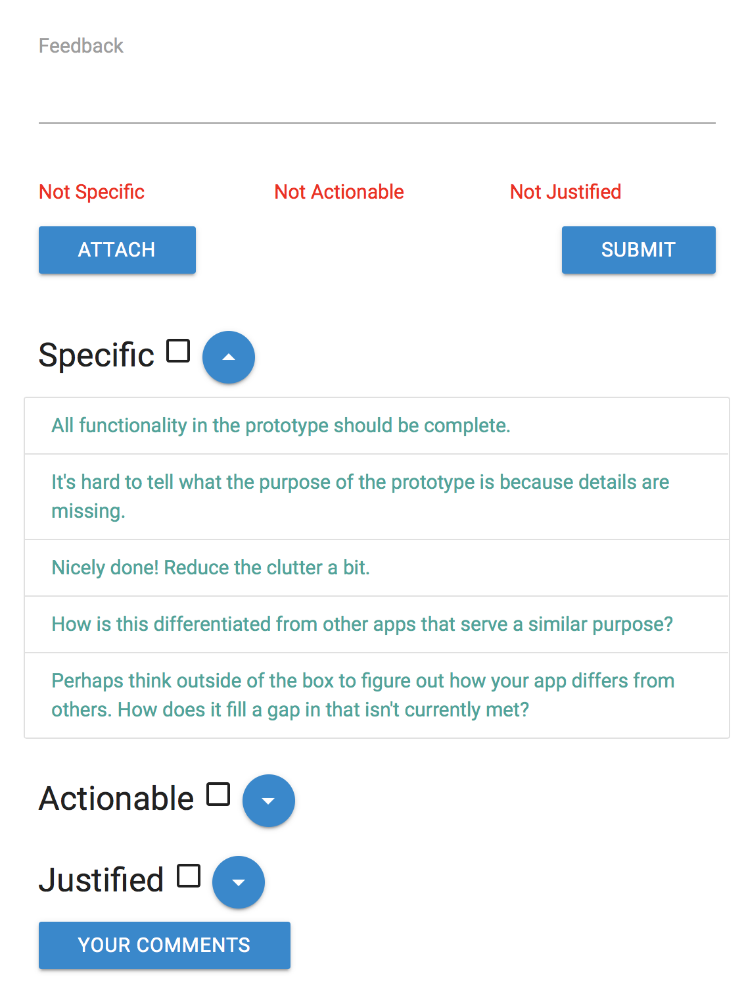
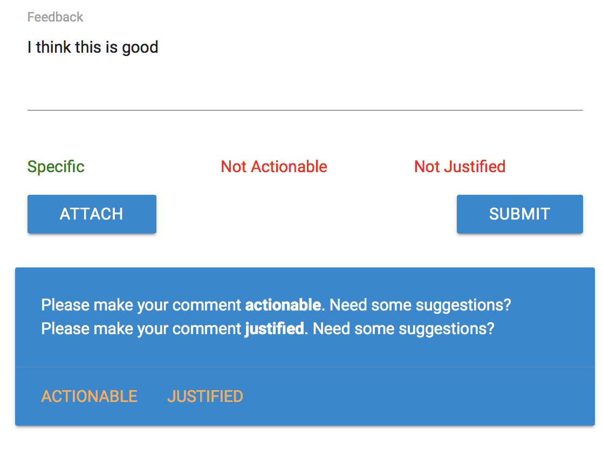

Your goal is to try to make sure your feedback fits the three categories of:
Specific, Actionable, and Justified for the most helpful and complete feedback.
To help you get started, you can select the feedback suggestions in the suggestions box in the feedback sidebar, which will copy the suggestions directly into the feedback textbox.

Welcome to CritiqueKit!
Here are the definitions of each category and some examples of specific, actionable, and justified feedback:
Specific: Is related to particular part of the design. I.e. "its nice that you begin with some information about your subjects"
Actionable: Provides a concrete suggestion for improvement. I.e. "I wish the pov contained a little more context as to what it is about keeping the memories that is currently missing from the observed users."
Justified: Provides a reason or explanation for feedback. I.e. "The variables used are not appropriate for a chi-square test because the variables of sessions and views are not categorical meaning they are not mutually exclusive from each
other."
Example of feedback that contains ALL 3: "The instructions are clear but there isn't really a script. It might be useful to develop a script that places the user in a scenario where they might want to add a new location as this would be more realistic
to your app."
Example of feedback that contains NONE: "Needs more detail," "nice"

Welcome to CritiqueKit!
As you provide your feedback, the checkboxes and indicator text will automatically check if CritiqueKit detects that your comment contains any of the characteristics.
If your feedback doesn't fit a certain characteristic, CritiqueKit will provide you with feedback suggestions provided from others to help you complete your comment.
Once your feedback fits all the characteristics, your comment will be considered complete, and the all three indicators will turn green.